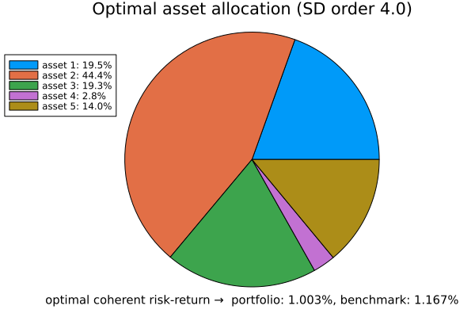
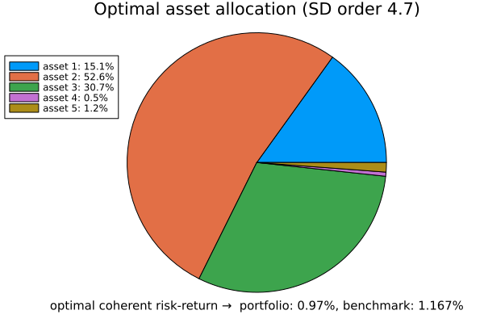

Optimization: Minimizing Higher Order Risk Measures
This tutorial demonstrates how to use the optimize_min_riskreturn_SD function to find the optimal portfolio allocation $x$. This function ensures that the weighted portfolio assets $x^{\top}\xi$ dominate the benchmark $\xi_0$ while minimizing higher-order risk measures with respect to $-x^{\top} \xi$.
Mathematical Framework
This problem arises in portfolio optimization. Define the simplex
\[\mathcal{S} \coloneqq \left\{(x_1, \dots, x_d) \mid x_i \geq 0 \text{ for } i=1, \dots, d, \text{ and } \sum_{i=1}^{d} x_i = 1 \right\}.\]
Definition higher-order coherent risk measure
Let $\beta \in (0,1)$, $r \geq 1$ and let $Y$ be a random variable. The higher-order risk measure at risk level $\beta$ is defined as
\[\mathcal{R}_{\beta;r}(Y) \coloneqq \min_{q \in \mathbb{R}} \ q + \frac{1}{1 - \beta} \|(-Y - q)_+\|_r.\]
This measure captures both quantile-based risk assessment and expected excess losses, making it more robust than simpler risk measures like Value-at-Risk (V@R). For intuition, see coherent risk measure
Key points
- The higher-order risk measure generalizes Value-at-Risk (V@R) and Conditional Value-at-Risk (CV@R).
- It combines both quantile-based and expected excess loss measures.
- Provides a more robust risk assessment, especially in heavy-tailed distributions.
The optimization problem can be rewritten as:
\[\begin{aligned} \min_{x \in\mathcal{S} } & \quad \mathcal R_{\beta;r}( -x^{\top} \xi)\\ \text{subject to } & \quad \xi_0 \preccurlyeq^{(p)} x^{\top} \xi, \\ & \quad x \in \mathcal{S}. \end{aligned}\]
Here, $\xi_0 \in \mathbb{R}^{n}$ represents the return of a benchmark portfolio, while $\xi \in \mathbb{R}^{d \times n}$ denotes the asset returns. The formulation considers $d$ assets and $n$ scenarios.
Example 1
In the first example, we illustrate the function optimize_min_riskreturn_SD using representative data.
# Define portfolio return scenarios (rows: assets, columns: scenarios)
ξ = [0.02 0.05 -0.01; # Asset 1 returns under different scenarios
0.03 0.06 0.02] # Asset 2 returns under different scenarios
# Define benchmark return scenarios (column vector)
ξ_0 = [0.01, 0.04, 0.00] # Benchmark returns in the same scenarios
# Define probability distributions for portfolio and benchmark scenarios
p_ξ = [0.3, 0.4, 0.3] # Probabilities for each scenario
p_ξ_0 = [0.4, 0.4, 0.2] # Probabilities for benchmark scenarios
# Set the order of stochastic dominance
SDorder = 2 # Second-order stochastic dominance
# Set the risk parameters
β=0.5
r=2.0
x_opt, q_opt,t_opt = optimize_min_riskreturn_SD(ξ, ξ_0,SDorder;p_ξ, p_ξ_0,β,r,verbose=true)Output
Simplex Constraints residuals: 5.903068123425115e-6
Stochastic Dominance Constraints residuals: 0.0"
println("Optimal asset allocation x: ",x_opt)
Optimal asset allocation x: [0.004074767447193794, 0.9959311356209297]
println("Optimal q: ",q_opt)
Optimal q: -0.019892461315708196
println("Optimal Objective: ", riskfunction_asset_allocation(x_opt, q_opt, ξ, r, p_ξ, β))
Optimal Objective: -0.019876482848988134In general, the output provides the optimal asset allocation vector $x$ of length $d$, the optimal $q$ for a higher-order risk measure, and a single optimal $t$ that confirms the stochastic dominance of the given order. For more technical details on reducing the verification of infinitely many $t$ (i.e., $t \in \mathbb{R}$) to a single value, refer to Lakshmanan et al. 2025.
Example 2
For this example, we consider the standardized dataset from Fama and French 2023.
using DataFrames
using Dates
data = DataFrame(
Date = Date.([Date("2024-07-01"), Date("2024-07-02"), Date("2024-07-03"), Date("2024-07-05"), Date("2024-07-08"), Date("2024-07-09"), Date("2024-07-10"), Date("2024-07-11"), Date("2024-07-12"), Date("2024-07-15"), Date("2024-07-16"), Date("2024-07-17"), Date("2024-07-18"), Date("2024-07-19"), Date("2024-07-22"), Date("2024-07-23"), Date("2024-07-24"), Date("2024-07-25"), Date("2024-07-26"), Date("2024-07-29"), Date("2024-07-30"), Date("2024-07-31")]),
Asset_1 = [-1.01, -2.50, -0.38, -1.11, 0.44, 0.05, -0.34, 4.00, 1.76, 1.53, 2.77, 0.71, -2.24, 0.08, 0.35, 2.55, -2.21, 1.67, 0.17, -0.97, -0.11, 0.24],
Asset_2 = [-0.72, -0.22, 0.27, 0.15, -0.22, -1.49, 0.79, 1.60, 1.04, 0.02, 1.28, 0.69, -1.24, -1.51, 0.29, -0.09, 2.88, -0.21, 1.26, -0.79, 0.79, 1.89],
Asset_3 = [1.10, -0.86, -0.21, -0.33, -0.64, 1.52, 1.31, 2.53, -0.06, -3.42, 2.59, -1.44, -1.74, -0.23, -0.54, 0.08, -1.61, 1.05, 2.29, -0.48, 0.98, 0.72],
Asset_4 = [-1.80, -0.09, 0.41, 2.10, 0.59, -2.59, 2.75, 0.73, 0.41, -2.50, 0.40, 1.12, -1.72, -2.67, -0.42, -0.39, -2.51, 0.00, 0.93, -0.48, -1.65, -1.14],
Asset_5 = [-0.65, 0.64, 0.41, -1.61, 0.33, -0.26, 1.93, 3.72, 2.17, -0.63, 1.83, 0.94, -1.78, -1.81, -0.25, 1.14, -0.41, 2.21, 2.13, -1.13, 0.07, -1.23]
)
ξ = Matrix(select(data, Not(:Date)))' # Define Portfolio matrix ξ ∈ R^{d×n} d assets and n scenarios
d, n = size(ξ)
τ = fill(1/d,d) # equally weights
ξ_0 = vec(τ'*ξ) # Define Benchmark ξ_0 ∈ R^{n}
p_ξ = fill(1/n,n) # Probability vectors for x'*ξ ∈ R^{n} , where x is portfolio weights
p_ξ_0 = fill(1/n,n) # Probability vectors for ξ_0 ∈ R^{n}
β = 0.5 # Risk parameter
r = 2.0 # norm parameterRun the function optimize_min_riskreturn_SD
SDorder = 4.0 # Stochastic order
x_opt, q_opt, t_opt = optimize_min_riskreturn_SD(ξ, ξ_0,SDorder;p_ξ, p_ξ_0,β,r,plot=true) # Run the optimization
Non-integer SD orders
SDorder = 4.7
x_opt, q_opt, t_opt = optimize_min_riskreturn_SD(ξ, ξ_0,SDorder;p_ξ, p_ξ_0,β,r,plot=true,max_ipot=100)# Run the optimizationBy default, max_ipot=50, but setting it to 100 allows the algorithm to attempt up to 100 iterations for a better objective function. For details, see the function documentation and interior point optimization.
